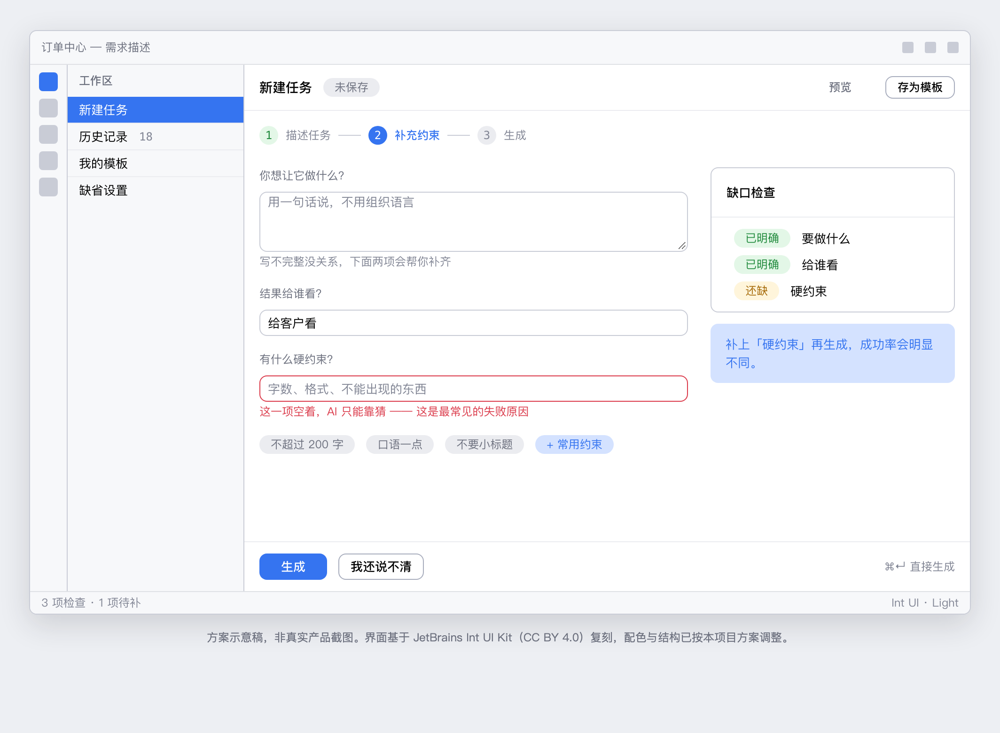

案例 01 · AI 产品体验设计 · 结构草稿，待补真实观察
让说不清需求的人，也能说清楚
用户在 AI 工具里卡住的，通常不是表达能力，而是不知道「AI 需要知道什么」。 这个项目把「自由描述」改成「结构化引导」，让界面替用户问出该问的问题。
01
问题：工具把「会提问」变成了使用它的前置条件
我每天用 Codex 处理设计相关的杂活：批量改名、整理素材、把说明文档转成网页。 但每一次开始之前，我都要先在心里过一遍：这句话该怎么说，它才听得懂。
说短了，它按自己的理解猜，猜错方向；说长了，重点被埋在一堆背景里，它反而抓错。 我常常要来回改三四轮描述，才拿到一个勉强能用的结果——而这四轮里， 我改的从来不是需求，而是说法。
这不像是在用一个工具，更像是入职第一天要跟一个很聪明但完全不了解我的同事解释事情。
02
调研：先把自己的失败对话全部记下来
这个问题的好处是，素材每天自己送上门。我做了两件事：
第一，行为日志。连续【待填】天，每次用完立刻记三样东西： 我原话怎么说的、它做错了什么、「我到底想说清什么」。不做筛选，全记。
第二，对照访谈。找【待填】位同样在长期使用 AI 工具的人， 让他们回看自己最近一次失败的对话，说出当时「心里想着的」和「手上打出来的」差在哪。
03
洞察：用户缺的不是表达能力，是「输入脚手架」
- 用户知道自己想要什么，只是不知道该翻译成什么。回看记录时，几乎每一次我都能一句话说清真实意图——但那句话是我在看到错误结果之后才说出来的。
- 失败分三类，但不是同一类问题。太短（缺约束条件）、太长（重点被上下文淹掉）、用词错位（用了对方没有共同定义的领域词）。三类的解法完全不同，但界面把它们当成同一件事处理。
- 关键信息总是「事后才想起来的」。约束条件（尺寸、格式、不能动哪部分）几乎都在第一轮之后才被我补上——因为界面从不问我。
- 来回改描述，掩盖了真正的成本。表面看是多打了几行字，实际是注意力和判断力被反复打断，一次专注能做完的事被切成很多段。
04
策略：不做更聪明的 AI，做更会提问的界面
常见的思路是让模型更懂人话。但我的记录显示，问题不在理解环节， 而在输入环节缺少引导——用户根本不知道有哪些信息是必要的。
所以我把方向定为：把「一次性自由输入」拆成「被引导的结构化输入」。 界面主动问出那三个用户总是事后才想起来的问题，而不是等他们自己想起来。
05
方案：三问前置、缺口提示、失败复盘
一、描述前的三问。输入框上方固定三个轻量入口：要什么、不要什么、怎么算完成。 不强制填写，但每个都放一个真实例子——用户看一眼就知道该怎么答。
二、实时缺口提示。用户打完后，界面指出「你还没说明文件格式」这类空白点。 只提示，不拦截，用户可以选择忽略。
三、失败后的复盘追问。结果不对时，不问「要重试吗」， 而是问「是哪里不对」——把这次的不满直接变成下一轮的约束，不用用户自己重新组织语言。

06
结果与反思
方案做成可点击原型后，我请【待填】位有 AI 工具使用经验的人， 在同一批任务上分别走原流程和新流程，记录「拿到可用结果需要的轮次」。
还没想清楚的地方：三问前置会不会让熟练用户觉得啰嗦？ 我暂时用「不强制填写」回避了这个矛盾，但这只是回避，不是解决—— 真正的答案可能在于让界面学会判断用户熟练度，而那又回到了猜用户意图的老问题。